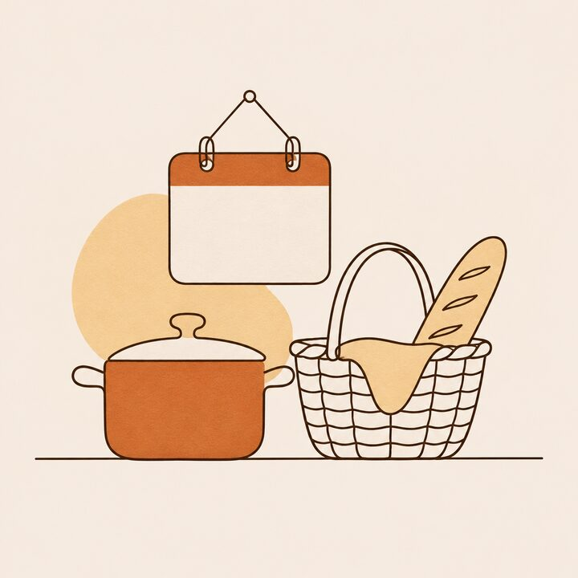
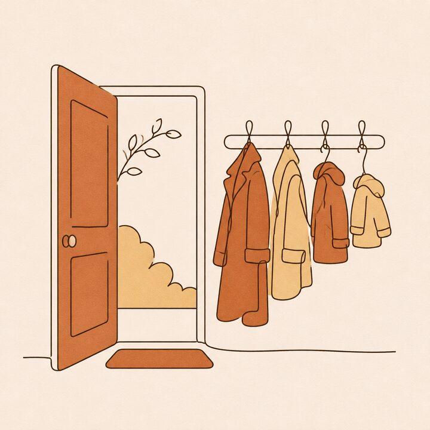
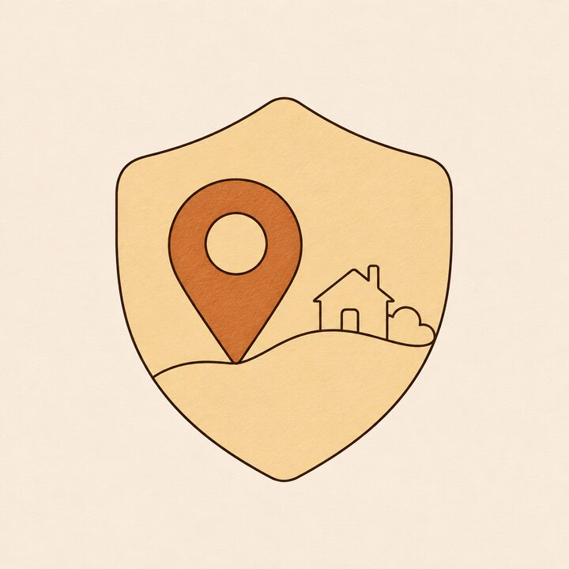

Planning et tâches Gratuit
Événements, tâches répétées, anniversaires et contacts utiles du foyer (nounou, médecin, école).
L’app du foyer, sur iPhone
Le planning, les repas, les courses et la discussion de la famille, au même endroit. Chacun voit ce qui le concerne, et plus personne ne court après l’information.
Gratuit pour commencer. Sans publicité, sans traceur. iPhone avec iOS 17 ou plus récent.

KOKON remplace le frigo couvert de post-it, les groupes de messages et les listes perdues.
L’essentiel est gratuit. KOKON Premium ajoute ce qui fait gagner du temps chaque semaine.
Événements, tâches répétées, anniversaires et contacts utiles du foyer (nounou, médecin, école).
Les messages du foyer et les propositions à voter, séparés de tes autres conversations.
Liste partagée, rayons triés, repas de la semaine prévus ensemble.
Une semaine de repas en un geste, selon ton stock, les goûts et les allergies de chacun.
Photographie le ticket de caisse : les produits alimentaires rejoignent le stock, avec leurs dates.
Les photos et les papiers du foyer, rangés par personne et protégés par Face ID.
L’argent de poche et les objectifs d’épargne, sans papier. Aucun lien avec une banque.
Savoir que tout le monde est bien arrivé. Désactivée par défaut, toujours visible par la personne concernée.
Garde alternée, famille recomposée : chacun peut appartenir à plusieurs foyers et passer de l’un à l’autre.

Un lien pour les adultes, un QR pour les enfants. Chacun a son rôle et voit ce qui le concerne.

Un compte enfant est créé par un parent ou un tuteur légal, et il reste sous son contrôle.
Un seul abonnement couvre tous les membres du foyer. Sans engagement, résiliable à tout moment.
0 €
Pour toujours
34,99 € / an
soit 2,92 € par mois
4,99 € / mois
Prix TTC en France. Paiement par ton compte Apple. L’abonnement se renouvelle automatiquement, sauf résiliation au moins 24 heures avant la fin de la période, dans Réglages › [ton nom] › Abonnements. Détails dans les conditions de vente.
KOKON vit de son abonnement, pas de tes données. Elles ne sont jamais vendues.
Ni pixel, ni outil d’analyse, ni rejeu de session. Dans l’app, sur ce site et dans nos e-mails.
Les données du foyer sont hébergées dans l’Union européenne, à Paris.
Rien n’est envoyé à l’IA sans ton accord, retirable à tout moment dans le Profil.
KOKON est conçu en France par Flavio et Steve. Une petite équipe indépendante, qui vit de l’abonnement et pas de tes données.
Chaque message envoyé à contact@getkokon.app est lu et traité par l’un de nous deux.
KOKON est disponible sur iPhone (iOS 17 ou plus récent). Une version Android est prévue après le lancement.
Par foyer. Un membre s’abonne, et tous les membres du foyer en profitent.
Non. Un parent ou un tuteur légal crée son accès avec un QR, depuis son propre téléphone. Le compte enfant ne reçoit aucun e-mail.
Sur l’iPhone : Réglages › [ton nom] › Abonnements › KOKON, ou depuis le Profil de l’app, « Gérer l’abonnement ».
Une question, une idée, un partenariat ? Écris-nous, nous répondons à chaque message.